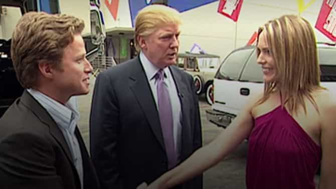
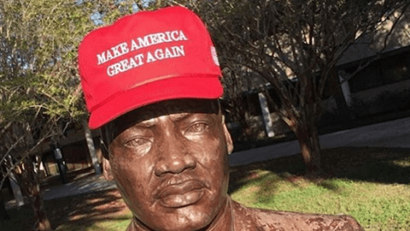

Daryush "Roosh" Valizadeh created ROK in October 2012. You can visit his blog at RooshV.com or follow him on Twitter and Facebook.


The celebrations have ended and we’ve all come to absorb the fact that Donald Trump is our next President, an outcome that many of us have aggressively worked for in the past several months. Now that we’ve gotten what we wanted, it’s time to describe exactly how a Trump presidency will improve our standing.

The biggest effect we’ll see is the death of political correctness. We now have a shitlord for President who has insulted ugly women as “fat pigs,” and whose private macho talk, which all masculine men have done, was relentlessly attacked by the press but not punished in the voter booth. This means that when you talk like Trump, the first thought your listener will have is, “He sounds like the President of the United States.”
What excuse will they now have for limiting your speech if one man was able to gain the highest office in the land because of it? Either Trump was elected because voters liked a person who makes those kinds of statements or they didn’t care enough that he made them. Whichever explanation you accept means that the will of the American people has stated that you can exercise your free speech, your opinions, and your desire to flirt with attractive women without having to obey a speech police force that evaluates everything you do based on how offensive it is to a kaleidoscope of races and loony identities. You can begin removing your politically correct filter.
I’m in a state of exuberance that we now have a President who rates women on a 1-10 scale in the same way that we do and evaluates women by their appearance and feminine attitude. We may have to institute a new feature called “Would Trump bang?” to signify the importance of feminine beauty ideals that cultivate effort and class above sloth and vulgarity. Simply look at his wife and the beautiful women he has surrounded himself with to remind yourself of what men everywhere prefer, and not the “beauty at every size” sewage that has been pushed down our throats by gender studies professors and corporations trying to market their product to feminist fatsoes. The President of the United States does not see the value in fat women who don’t take care of themselves, and neither should you.

There are so many of us that we can ease out of the closet and not be afraid of persecution like before. What are they going to do, fire everyone who supports Trump? Accuse every man who voted for him of rape? The way the establishment has been able to marginalize us is to corner men individually and apply intense pressure, but now we have natural allies in all men who back Trump, even if they don’t subscribe to our particular interpretation of masculinity.
Liberals will not be able to point and shriek to get you to withdraw like before. They will not have easy victories by using labels like “racist” or “sexist.” They will have to endure us in their midst and bite their lip when we offend their degenerate ideals, knowing that the price of attacking us is becoming too costly. It may be as simple as whipping out your MAGA hat, as if it’s a bat signal, and having fellow Trump supporters come to your aid. I know that if I see a Trump supporter in trouble, I will help him, regardless of his race or station. Liberals will be forced to share space with those whom they hate, instead of trying to exile them like in the past.
Men who hold our beliefs have long ago learned that we can’t go around sharing them in public to those who are not vetted. If you’re like me, you first “test” a new man you meet with a masculine comment to see how he responds, such as remarking on the attractiveness of a woman or how you’ve heard of a community online that trolls liberals without mercy. We’ve even had to devise a special “pet shop” code to know if a man is aware of the teachings that are found on ROK or the forum. We now have a easier shortcut in Trump.
If a man tells you that he voted for Trump, it’s safe to say that he is favorable to strong borders, nationalism, masculinity, and beautiful women. On a basic level, you will be able to get along with this man and build a bond. It also works the other way around where you bring up Trump to screen out those who are offended by him. It’s fine if someone is politically indifferent, but if a man opposes Trump then I have to anticipate him attacking or sabotaging me in the future. I will distance myself from him for my own well-being.

We now have a President who will not encourage anti-male propaganda, rape culture, and female victimhood. While I do have minor concerns on the influence of his feminist-minded daughter, Ivanka, Trump will not continue the attack on men that has been institutionalized since the sexual revolution and accelerated during the eight years of Obama. Because our current cultural dystopia is the result of intense long-term manipulation, it is more than enough for Trump to simply not touch the gender issue to allow the culture to return to a more patriarchal order. Stop feeding the rot and it will die off, allowing biology to naturally reassert itself.
We’ve experienced so many changes in the past decade that we haven’t had a chance to understand what’s going on and adapt. Instead, we’ve been reacting from one blow to the next, whether it’s the loss of our jobs through witch hunts or the rape culture horror that has turned a banal consensual hookup into possible incarceration. Trump’s victory gives us room to begin pushing back against the fictions that have put men in harm’s way.
Paradoxically, the benefits of a Trump presidency will not involve specific actions from Trump. His presence automatically legitimizes masculine behaviors that were previously labeled sexist and misogynist. While we may still get heat for them, it will be less severe and we’ll be less likely to sustain serious damage. Liberals will have no choice but to silently stew on our words and we can more effortlessly connect with men not only for male bonding but also to push back against a demoralized and fractured left. Victories will be far easier to achieve under Trump than Obama.
This is our moment. The door is opening for a renaissance of masculinity where men can take pride in being men, and the best part of it is that we don’t need to wait for Trump to do anything. His victory is more than enough for us to apply our own individual strength in seizing the bull’s horns where we can come out of the politically incorrect closet and assert our beliefs and behaviors. It would be icing on the cake if Trump rolled back anti-masculine laws and policies, but it’s not required, because the power to change ourselves and our country is within our hands. Return Of Kings opened in 2012, and the only surprise for me is how quickly the name is being fulfilled.
Read Next: If Donald Trump Doesn’t Win, We’re Screwed